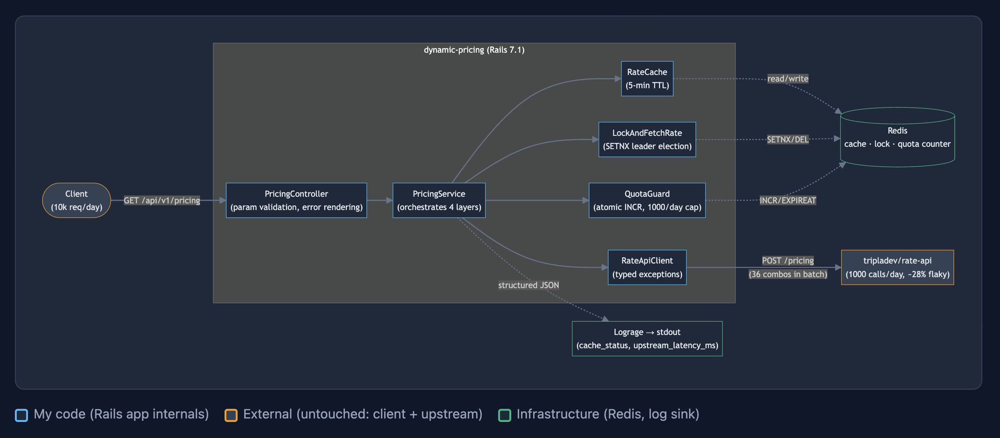

A Case Study in Caching & Quota Design
Every upstream call burns expensive inference compute. So I scoped the goal beyond “stay under 1,000/day”: minimise real calls. Our service must serve 10,000+ requests/day from this 1,000/day budget.
36 parameter combinations (4 periods × 3 hotels × 3 rooms) × 288 five-minute windows/day:
Way over the 1,000-call budget. We need batch fetching + request coalescing + a hard quota cap.
The full picture: client → Rails app (4 layers) → Redis + upstream. Each layer is detailed in its own section below.

The implementation assumes a single Redis instance. Under Sentinel / Cluster HA, the LockAndFetchRate SETNX can be lost during primary failover — a brief window where two leaders may exist.
For production HA, the standard answer is a consensus-backed coordinator like etcd, Consul, or ZooKeeper (Raft/Paxos under the hood). Redlock improves on a single Redis but has known safety issues under clock skew or GC pauses, as discussed in Martin Kleppmann's distributed-locking analysis. The atomic QuotaGuard counter is a second line of defence — even if two leaders briefly co-exist, the daily upstream cap still holds.
docker compose up -d --buildcurl 'http://localhost:3000/api/v1/pricing?period=Summer&hotel=FloatingPointResort&room=SingletonRoom'docker compose exec app ./bin/rails testdocker compose exec app ./bin/rails test test/services/rate_cache_test.rbbrew install wrk && cd load_test && chmod +x *.sh && DURATION=30s ./run_all.shdocker compose exec app ruby upstream_test.rb bulk
Step 5 validates four behavioural invariants against the running stack — see Load & Chaos Tests. Full reference in load_test/README.md.
Step 6 is how the upstream findings on this page were generated — see API Findings.
app/services/rate_cache.rb
The upstream API is expensive (1,000 calls/day). The same (period, hotel, room) returns the same rate for a while.
Without caching, every request triggers an upstream call. At 10,000 requests/day we'd blow through the quota very fast.
Cache each rate by (period, hotel, room) with a 5-minute TTL. Within that window, all requests for the same combo are served from cache — zero upstream calls.
cache key: "pricing:Summer:FloatingPointResort:SingletonRoom" TTL: 5 minutes Total keys: 36 (4 periods × 3 hotels × 3 rooms)
app/services/lock_and_fetch_rate.rb
Cache entries expire every 5 minutes. At the moment of expiry, many requests can arrive at the same time and all see a cache miss.
Without coordination, every concurrent cache-miss request calls upstream independently. A burst of 50 requests burns 50 quota units instead of 1.
Use a Redis lock (SET NX) with a global lock key (lock_and_fetch_rate:pricing:bulk_fetch) to elect one “leader”. The leader calls upstream and fills all 36 cache entries. All “followers” wait and read from the freshly populated cache.
Three values form a chain — each depends on the previous:
Without a timeout, if upstream hangs, the request blocks forever and ties up a Puma worker. 5s gives upstream enough time to respond normally, but frees the worker quickly when upstream is down.
The leader could get the upstream response at 4.9s, write cache, but the follower already gave up at 5.0s — wasted the whole wait. The 1s buffer covers this edge case.
Normally ensure deletes the lock right away after the leader finishes. But if the process crashes hard (e.g. kill -9), ensure never runs and the lock is stuck. 7s auto-expire is the safety net.
It must be longer than FOLLOWER_TIMEOUT (6s). If shorter, the lock expires while followers are still waiting → a new request grabs the lock → becomes a second leader → calls upstream again → wastes quota.
1ms = too fast, floods Redis. 1s = too slow, follower waits up to 1s after leader finishes. 50ms = good balance. At most 50ms extra latency.
app/services/quota_guard.rb
With Batch Fetch, the theoretical maximum is only 288 calls/day — well under the 1,000 budget. Under normal operation, QuotaGuard will never trigger. It exists as a local tripwire for scenarios that shouldn't happen but could — bugs that turn every cache miss into an upstream call:
rate to price. Parser fails, cache stays empty, every request hits upstream until upstream itself starts rejecting.RateCache.write_all has a typo in the key name. Writes succeed silently but reads never match → same runaway loop.Normally the 1,001st call is rejected up front with 429 — upstream never runs the expensive inference for it. But if that limiter ever misconfigures (bug, redeploy, staging quirk), our overflow would actually hit the computationally expensive inference and burn real compute. QuotaGuard keeps us honest to the 1,000/day contract regardless of upstream's enforcement state.
Trade-offs accepted:
DAILY_LIMIT needs updating too.Multiple Puma workers handle requests in parallel. A naive “read → check → increment” has a race condition: two workers could both read 999, both pass the check, and both call upstream.
// Race condition example: Worker A: read count → 999 → passes check → calls upstream // count is now 1000 Worker B: read count → 999 → passes check → calls upstream // EXCEEDED!
Redis INCR is atomic — it increments and returns the new value in one step. Each request gets a unique sequential number. Exactly 1,000 calls pass through. No race condition.
daily key: "quota:2026-04-22" // auto-expires at midnight Redis INCR → 1000 → pass ✓ Redis INCR → 1001 → raise ExhaustedError ✗
Because INCR is atomic, there's no way to overshoot. A lower buffer only makes sense with a gradual slowdown strategy. We use a hard stop with Retry-After until midnight, so capping lower just wastes quota.
The upstream the upstream rate API documentation does not specify when the daily quota resets. This implementation assumes UTC midnight — the Redis key uses quota:YYYY-MM-DD (UTC) and the Retry-After header counts seconds until UTC 00:00. If the actual reset time differs, only the key date logic and Retry-After calculation need to change.
lib/rate_api_client.rb → get_all_rates
The upstream API accepts multiple rate queries in a single request. There are 36 possible combinations (4 periods × 3 hotels × 3 rooms).
Without batching, each cache miss fetches only one rate — one quota unit per rate. Even with LockAndFetchRate, the worst case is 36 cache misses × 288 windows = 10,368 calls/day.
On any cache miss, fetch all 36 rates in a single API call via RateApiClient.get_all_rates. Then RateCache.write_all fills every cache key at once. One quota unit refreshes the entire cache for the next 5 minutes.
Cache miss for "Summer:FloatingPointResort:SingletonRoom" → fetch 1 rate → write 1 cache entry → 1 quota unit for 1 rate
Worst case: 10,368 calls/day
Cache miss for "Summer:FloatingPointResort:SingletonRoom" → fetch 36 rates (all combos) → write 36 cache entries → 1 quota unit for 36 rates
Worst case: 288 calls/day (= theoretical minimum)
Each decision lists the options considered, the choice, and the trade-off consciously accepted. Click to expand.
Bulk fetching itself isn't a real choice — the math forces it: 36 combos × 288 cache windows/day = 10,368 calls, way over the 1,000 budget. So each upstream call has to return all 36 rates. Under a 5-min TTL, 288/day is the math floor on the upper bound — no compliant design can do fewer at peak. The interesting question is when to trigger that call: on the first cache miss (lazy — 0 at the lower bound), or on a schedule (prewarming — always ≥ 288).
| Option | Behaviour |
|---|---|
| Periodic prewarming e.g. Sidekiq cron every 4 min |
Cache always warm, every request is instant. But: burns 360 calls/day even at zero traffic; needs extra infra (Sidekiq + scheduler). |
| Lazy on-demand ✓ | Upstream cost proportional to actual demand — 0 calls when nobody's asking, up to 288/day at full traffic. No extra infra. |
Why lazy fits this workload:
Prewarming is the right call when: traffic is predictable and steady, latency SLAs are strict (any cache miss is unacceptable), or the quota budget is generous. For those workloads, prewarming wins. Different constraint, different answer.
Trade-off accepted: the first user to hit an expired cache pays a small latency tax (waits for the upstream call). All subsequent requests in that 5-min window are instant cache hits.
| Option | Rejected because |
|---|---|
MemoryStore | Per-Puma-worker memory — hit ratio divided by worker count, breaks 10:1 requirement. |
SolidCache | SQLite-based; no atomic INCR for quota; row-level lock contention. |
| Redis ✓ | Cross-worker sharing; atomic primitives (SET NX, INCR, EXPIREAT) solve cache, lock, and quota with one dependency. |
Trade-off: one extra service in docker-compose.yml. Worth it — Redis is ubiquitous in Rails production.
Without coalescing, a 50-request burst burns 50 units of the daily budget in milliseconds. Redis SET NX elects one leader across all Puma workers; followers poll the cache.
// LockAndFetchRate pseudocode: token = SecureRandom.uuid // per-leader fencing token if SET NX "lock:bulk_fetch" = token (TTL 7s) → leader yield // fetch upstream, write cache Lua: if GET == token then DEL // release only if still ours else → follower: poll cache every 50ms up to 6s
Fencing token: each leader holds a unique UUID. On release, a Lua script checks "still mine?" before deleting — otherwise a slow leader could wipe the new leader's lock and let a third request slip in.
Single-Redis assumption: under Sentinel / Cluster HA, primary failover can briefly produce two leaders. Production HA wants a Raft-based coordinator (etcd / Consul). QuotaGuard's atomic counter is a second line of defence — even if two leaders co-exist briefly, the daily cap still holds.
The upstream limit is 1,000 calls per day — not per second. So we need a simple counter that resets at midnight.
Batch Fetch already keeps the theoretical max at 288 calls/day — well under budget. Under normal operation, QuotaGuard never triggers.
The honest remaining value is defensive client behavior: we cap our own call rate at 1,000/day even if upstream's own rate limiter fails to enforce it (bug, redeploy, staging quirk). In that edge case our overflow would otherwise hit upstream's computationally expensive inference and burn real compute. QuotaGuard prevents that.
Trade-offs accepted:
DAILY_LIMIT needs updating too.The counter must be shared across all Puma workers (separate processes), and INCR is atomic — it increments and returns the new value in one step, so two workers can never both read 999 and both pass the check.
INCR on quota:YYYY-MM-DD — atomic, cross-workerINCR is atomic — no way to overshootrefund_quota! wraps DECR in a Lua script that only runs when counter is above zero. Without this, burst 401s before any INCR would push counter negative, letting subsequent INCRs silently exceed 1,000.Quota resets at UTC midnight. The upstream docs don't specify when the daily limit resets, so we assume UTC 00:00. The Redis key uses quota:YYYY-MM-DD (UTC) and Retry-After counts seconds until UTC midnight. If the actual reset time differs, only these two values need updating.
When a dependency dies (Redis, upstream, lock), what should the service do? There are four common strategies — each with a different priority.
| Strategy | What it does | Protects | Sacrifices |
|---|---|---|---|
| ✓ Fail-closed My choice |
Dependency dies → return 5xx, never call upstream | Upstream contract (1000/day cap) | Own service uptime |
| Fail-open | Dependency dies → bypass protection, hit upstream directly | Own uptime | Quota burns fast; thundering herd unblocked |
| Graceful degradation | Return stale cache, default value, or partial response | User experience | Data freshness / correctness |
| Fail-fast + retry | Return 5xx, expect client to retry with backoff | Same as fail-closed but pushes retry to caller | Assumes well-behaved client |
Why fail-closed for this service: two spec rules forced it.
Once those two are eliminated, fail-closed is the only honest choice. Fail-fast + retry is functionally equivalent but offloads correctness to the client; for a proxy, owning that responsibility is cleaner.
When I'd choose differently:
The right choice always depends on whether "wrong data" or "no data" is more harmful. For pricing, wrong data wins.
Every upstream failure — 401, 5xx, timeout — returned 400 Bad Request. The client had no way to distinguish a bad request from a server-side failure.
Each failure maps to a distinct HTTP status. The client knows exactly what happened and whether to fix the request, retry, or escalate.
{"message":"Failed to process rates...","status":"error"}rate field missing from responseFrom 1,001 live test calls — see UPSTREAM_BEHAVIOR.md for full pattern tables.
Anti-Corruption Layer (ACL) RateApiClient absorbs all upstream quirks and exposes a clean typed interface. PricingService never touches a raw HTTP response:
Integer on success| Situation | Who raises | Client status | Client message | Client action |
|---|---|---|---|---|
| Invalid params | Controller | 400 | Missing required parameters / Invalid period | Fix request |
| Daily quota used up | QuotaGuard | 429 | Daily quota reached — requests resume at midnight UTC | Wait for Retry-After |
| Upstream returns HTTP 429 (token limit) | RateApiClient | 429 | Upstream API quota exhausted — token limit reached | Wait for Retry-After |
| Bad token (401) | RateApiClient | 502 | Upstream authentication failed | — |
| Upstream 200 with error body | RateApiClient | 502 | Upstream error | — |
| Upstream 200, rate field absent | RateApiClient | 502 | Upstream error | — |
| Upstream 5xx | RateApiClient | 502 | Upstream error | — |
| Upstream timeout | RateApiClient | 504 | Upstream timed out | — |
| Follower waited too long | LockAndFetchRate | 504 | Request timed out waiting for upstream result | — |
| Unexpected error | StandardError catch-all | 500 | Unexpected error | — |
Both 429 responses include a Retry-After header (seconds until UTC midnight). All other error responses return only the status code and message — no retry guidance is provided.
Every request emits a single JSON log line with: method, path, status, duration, cache_status ("hit" or "miss"), and upstream_latency_ms.
// Example log line: {"method":"GET","path":"/api/v1/pricing","status":200,"duration":12.3, "cache_status":"hit","upstream_latency_ms":null}
Why Lograge over paid services (Datadog, New Relic): Lograge is free, zero config, and ships with Rails. For a case study like this, structured JSON logs are enough to prove the observability mindset. In production, these same JSON lines can be piped into any log aggregator.
Why this matters: "How would you know this service is healthy in production?" has a concrete answer — filter by cache_status=miss, watch upstream_latency_ms.
All test files follow a consistent section structure: Happy path → Fail path → Edge/Boundary → Isolation. Coverage measured with SimpleCov — currently 100% (scaffold files excluded).
Why WebMock over .stub: Stubbing RateApiClient.get_all_rates directly bypasses the HTTP layer, hiding timeout, header, and retry behaviour. WebMock intercepts at the socket layer, producing more realistic tests.
These were considered and intentionally left out:
What happens when each dependency fails, and why the 1000/day cap still holds.
| What fails | What happens inside | Client sees | Upstream impact | Recovery |
|---|---|---|---|---|
| Redis fully down e.g. crash, OOM, network partition |
Rails' built-in cache error handler swallows the Redis error and returns nil → Rails.cache.write(..., unless_exist: true) returns nil → LockAndFetchRate falls into the follower branch → poll_for_result sees nil for 6s → raises LockAndFetchRate::TimeoutError |
504 "Request timed out waiting for upstream result" | 0 calls — no one acquires the lock, so upstream is never reached | Service recovers immediately when Redis comes back online (verified by the Fail-closed when Redis dies test in Load & Chaos Tests) |
| Redis restart e.g. deploy, OOM, container restart |
AOF replays everything back — cache, lock, counter — with their original expiry times. Stale lock self-expires within 7s (same as leader crash); cache stays inside the 5-min freshness window; counter resumes counting. Up to ~1s of writes may be lost (appendfsync everysec default). |
Brief unavailability during restart (a few seconds); reads resume normally after AOF replay | 0 calls — cache and counter both survive; nothing extra to fetch | Self-healing via AOF + persistent volume. The 1000/day cap holds across restarts, not just within a single uptime. |
| Leader crashes mid-fetch e.g. kill -9, OOM, container restart |
ensure never runs → lock stays held until 7s auto-expire → followers wait then time out at 6s. Each leader holds a unique UUID (fencing token), so a slow leader waking up after expiry won't accidentally delete the new leader's lock. |
504 "Request timed out waiting for upstream result" | ≤1 call — 0 if leader crashed before calling upstream, 1 if it crashed during or after | Wait up to 7s for the lock to auto-expire (that's the lock TTL). Then the next request takes over as new leader. |
| Upstream timeout 5s HTTPParty timeout (~7%) |
RateApiClient catches Net::ReadTimeout, raises TimeoutError → lock released |
504 "Upstream timed out" | 1 call — quota consumed for the failed attempt | Next request becomes new leader and retries upstream. |
| Upstream HTTP 5xx ~7% rate observed in live testing |
RateApiClient sees non-200 status, raises UpstreamError → lock released, cache not written | 502 "Upstream error" | 1 call — quota consumed for the failed attempt | Next request becomes new leader and retries upstream. |
| Upstream returns 200 with error body ~7% rate observed in live testing |
RateApiClient parses body, sees no rate field, raises UpstreamError → lock released, cache not written |
502 "Upstream error" | 1 call burned — but we deliberately don't cache the bad response. Next request retries, no stale garbage stuck in cache. | Next request becomes new leader and retries upstream. |
| Upstream returns garbage values unknown hotel, zero/negative rate, decimal strings, missing fields |
RateApiClient runs each record through a dry-schema + positive-numeric check. Bad records are logged and skipped; the rest still get cached. | Service still returns the requested rate if it survived validation, otherwise 502 | 1 call — partial response still better than zero | One bad row doesn't deny cache to 35 good rows. If every record is invalid the whole response is rejected. |
| Upstream 401 (auth failure) e.g. token rotation needed |
RateApiClient raises UnauthorizedError → PricingService catches → refunds the quota unit (the call was rejected before processing) | 502 "Upstream authentication failed" | 1 call but quota refunded — QuotaGuard.refund_quota! ensures bad tokens don't burn budget |
Operator must rotate token. Until then, every cache miss costs 1 quota then refunds — budget stays intact. |
| Upstream HTTP 429 (their rate limit) ~0.1% observed — upstream's daily limit hit |
RateApiClient raises QuotaExhaustedError → PricingService catches | 429 + Retry-After header |
1 call — rejected call still counts upstream-side | Wait until upstream's window resets (assumed UTC midnight, see D4). Our QuotaGuard catches the same condition locally before the call — this row is the rare race where our counter and upstream's diverge. |
| Quota counter at 1000 budget exhausted for the day |
QuotaGuard's atomic INCR returns 1001 → raises ExhaustedError before RateApiClient is called | 429 + Retry-After header (seconds until UTC midnight) |
0 calls — the deterministic guarantee that 1000 is never exceeded (verified by the Quota hard cap test in Load & Chaos Tests) | Counter auto-resets at UTC midnight via EXPIREAT. Users hitting cache still get their rate — only fresh fetches get blocked. |
Every dependency failure routes to a 5xx response. The service never calls upstream when its protection layers (cache / lock / quota) are degraded. This is "fail-closed" — protect the upstream contract at the cost of own uptime, which is the right priority for a proxy.
Two live test runs — 1001 calls each — against the upstream rate API, run before implementation. ~28% failure rate across 4 distinct failure modes, all confirmed in both single and bulk requests.
rates key (~7%), rate field silently absent from response (~7%), and empty rates array. HTTP status alone cannot be trusted.RateApiClient inspects the response body on every 200 — each failure mode raises UpstreamError, never returns nil silently.rate field is not quota exhaustionrate field meant quota was exhausted. Testing proved otherwise — the missing field is an intermittent processing error (~7% regardless of quota). Quota exhaustion has its own signal: 429 with {"error":"Rate limit exceeded (1000/day)"}.QuotaExhaustedError. Map missing rate → UpstreamError. Two separate exceptions, two separate response paths.QuotaGuard pre-consumes one unit before every upstream call. On 401, it refunds the unit — the request never reached upstream processing.Unit tests prove the code is correct. Load tests prove it works under real traffic. I ran 4 tests against the live app (Rails + Redis + rate-api) — here's what each one asks and what I measured.
| What I'm testing | The question | What I measured | |
|---|---|---|---|
| Single-flight lock | If 50 users hit the API at the same time on a cold cache, do they all hammer the upstream — or does my lock collapse them into one call? | 1,404 client requests → 1 upstream call 5 seconds at 50 concurrent connections |
✓ PASS |
| Cache hit rate | Under steady traffic, what percent of requests are served from cache vs. hitting the upstream? | 99.93% hit rate 7,081 hits / 5 misses in 30 seconds |
✓ PASS |
| Quota hard cap | If something goes wrong and we approach the 1,000/day upstream limit, does the 1,001st call get blocked — or does it leak through? | HTTP 429 returned, 0 upstream calls Set counter to 1000, next request blocked with Retry-After: 31254s (until UTC midnight) |
✓ PASS |
| Fail-closed when Redis dies | If Redis crashes, does the service keep accidentally calling upstream — or does it shut the door cleanly? | 5/5 requests blocked, 0 upstream calls All returned HTTP 504; service auto-recovered when Redis came back |
✓ PASS |
Try it yourself: cd load_test && ./run_all.sh (~6 minutes total) or DURATION=30s ./run_all.sh (~1 minute smoke test).
Rails project tree with annotations. NEW = I wrote it. MOD = starter file I edited. UNTOUCHED = Rails defaults left as-is.
inference-cache-gateway/ ├── app/ │ ├── controllers/ │ │ ├── api/v1/pricing_controller.rb [MOD] extracted whitelists, broadened error rendering │ │ └── application_controller.rb [UNTOUCHED] │ ├── models/ │ │ ├── pricing_constants.rb [NEW] whitelist (period/hotel/room) — moved out of controller │ │ └── application_record.rb [UNTOUCHED] │ ├── services/ │ │ ├── api/v1/pricing_service.rb [MOD] rewrote stub into 4-layer orchestrator + error mapping │ │ ├── base_service.rb [UNTOUCHED] result / errors pattern (kept the starter) │ │ ├── rate_cache.rb [NEW] L1 5-min TTL cache │ │ ├── lock_and_fetch_rate.rb [NEW] L2 SETNX leader election + fencing token │ │ └── quota_guard.rb [NEW] L3 atomic 1000/day cap + refund-on-401 │ ├── jobs/application_job.rb [UNTOUCHED] │ └── channels/ [UNTOUCHED] ├── lib/ │ └── rate_api_client.rb [MOD] L4 ACL — added typed exceptions, dry-schema, bulk fetch ├── config/ │ ├── routes.rb [UNTOUCHED] the starter already scoped /api/v1/pricing │ ├── initializers/ │ │ ├── lograge.rb [NEW] structured JSON logs (cache_status, upstream_latency_ms) │ │ ├── cors.rb [UNTOUCHED] │ │ ├── filter_parameter_logging.rb [UNTOUCHED] │ │ └── inflections.rb [UNTOUCHED] │ ├── environments/{development,production,test}.rb [MOD] cache_store + lograge wiring │ └── application.rb / boot.rb / environment.rb / puma.rb / cable.yml / database.yml / locales/ [UNTOUCHED] ├── test/ │ ├── services/pricing_service_test.rb [NEW] │ ├── services/rate_cache_test.rb [NEW] │ ├── services/lock_and_fetch_rate_test.rb [NEW] │ ├── services/quota_guard_test.rb [NEW] │ ├── lib/rate_api_client_test.rb [NEW] │ ├── controllers/pricing_controller_test.rb[MOD] expanded to cover new error paths │ └── test_helper.rb [MOD] + WebMock, SimpleCov, Timecop ├── load_test/ [NEW] chaos test suite │ ├── 1_singleflight.sh 50 concurrent cold-start → 1 upstream call │ ├── 2_cache_hit_rate.sh sustained load → ≥99% hit rate │ ├── 3_quota_cap.sh counter at 1000 → 1001st blocked, 0 leak │ ├── 4_fail_closed.sh Redis stopped → all 5xx, 0 upstream │ ├── lib.sh / run_all.sh shared helpers + orchestrator │ └── README.md ├── bin/ [UNTOUCHED] bundle / rails / rake / setup / docker-entrypoint ├── db/seeds.rb [UNTOUCHED] ├── public/robots.txt [UNTOUCHED] ├── Gemfile / Gemfile.lock [MOD] + redis, lograge, dry-schema, simplecov, timecop, webmock, rubocop ├── docker-compose.yml [MOD] + Redis container, AOF persistence, env wiring ├── Dockerfile [UNTOUCHED] ├── .gitignore [MOD] + log/.env/coverage entries ├── .env.example [NEW] RATE_API_URL / RATE_API_TOKEN ├── .rubocop.yml [NEW] style rules ├── upstream_test.rb [NEW] small Ruby script that hits upstream a bunch of times to see how it really behaves ├── UPSTREAM_BEHAVIOR.md [NEW] documented response patterns from 1001 live calls ├── README.md [MOD] rewrote to point at this design site └── Netify_site/ [NEW] this design site (3 HTML pages + diagram)
Boilerplate (bin/, most config/, db/, channels, jobs) is left as Rails defaults — there's no value in reformatting code I didn't change. Reviewer can focus on the NEW and MOD entries.
"Accelerate your agents with convention over configuration."
Ruby on Rails scales from PROMPT to IPO. Token-efficient code that's easy for agents to write and beautiful for humans to review. — rubyonrails.org
Tool: Claude Code (CLI) — Anthropic's official CLI for Claude · Claude Opus 4.7
I direct & define → agent executes → I review, challenge, and decide.
I am the starting point (design) and the finish line (quality) — the agent accelerates everything in between.
I set the direction, owned every architectural decision, and defined the constraints at every layer. A few examples of what that looked like in practice:
Direction
cache_status and upstream_latency_ms, so every cache hit/miss and latency spike shows up in logsRATE_API_TOKEN out of docker-compose into .env so secrets are never committed to the repo; switched QuotaGuard from Redis.new to Rails.cache connection pool to prevent connection leaks under loadChallenge & Correct
SingleFlight → LockAndFetchRate, permit! → consume_quota!rate field has nothing to do with quota exhaustion; fixed 3 exception types as a resultrefund_quota! before the key exists creates a negative counter with no TTL, which breaks all future quota countsReview the final outcome
LockAndFetchRate: the agent used the same key for both the lock and the cache, so followers looked up the wrong key and got nothing back — split into separate lock_key and cache_keyGiven clear direction, the agent works autonomously and produces output ready for review.